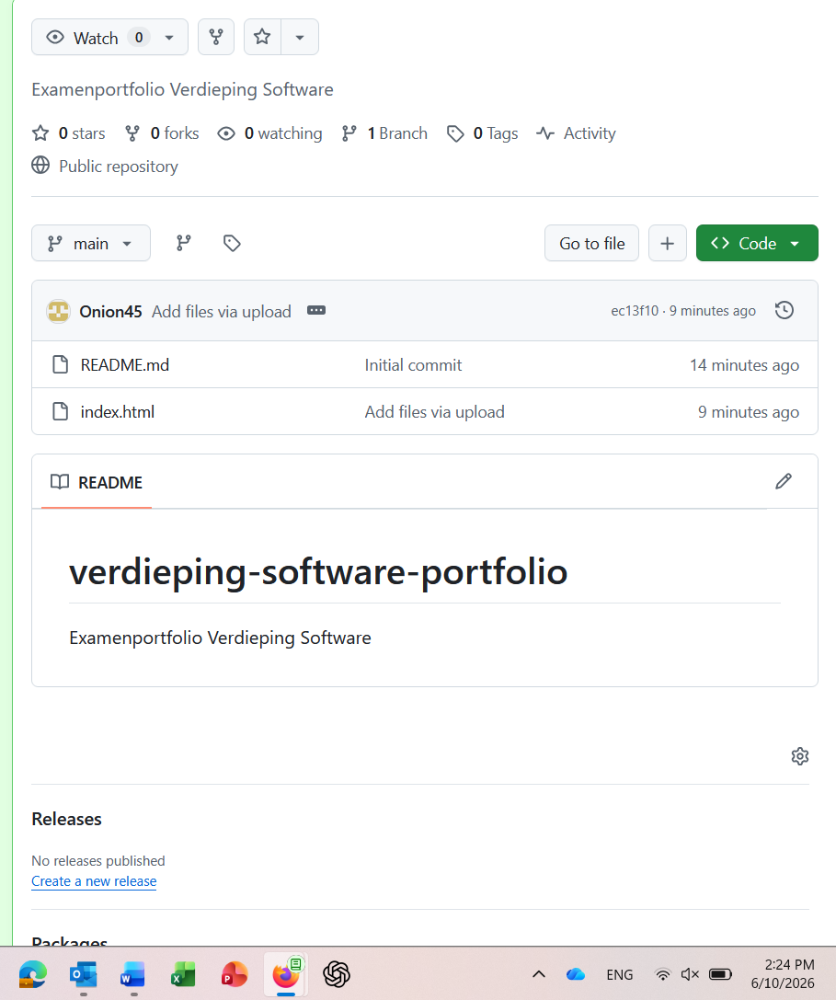
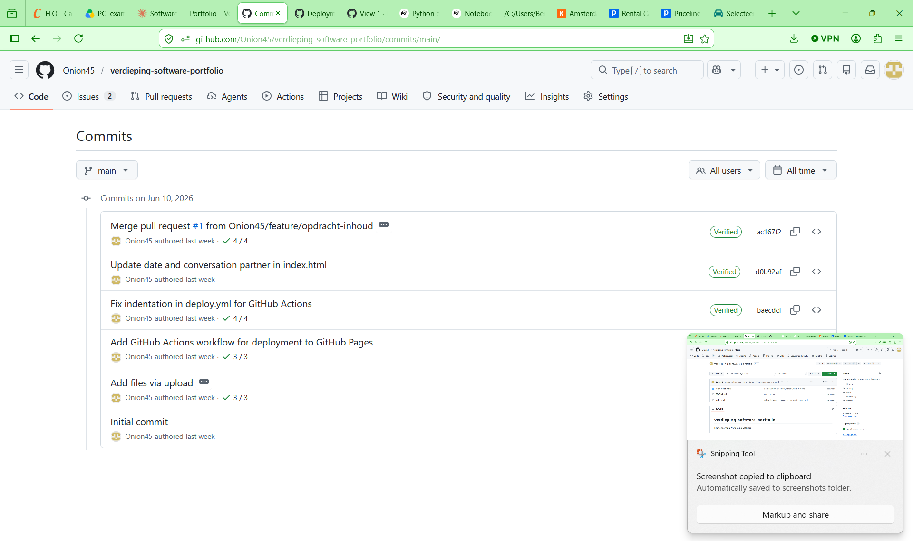
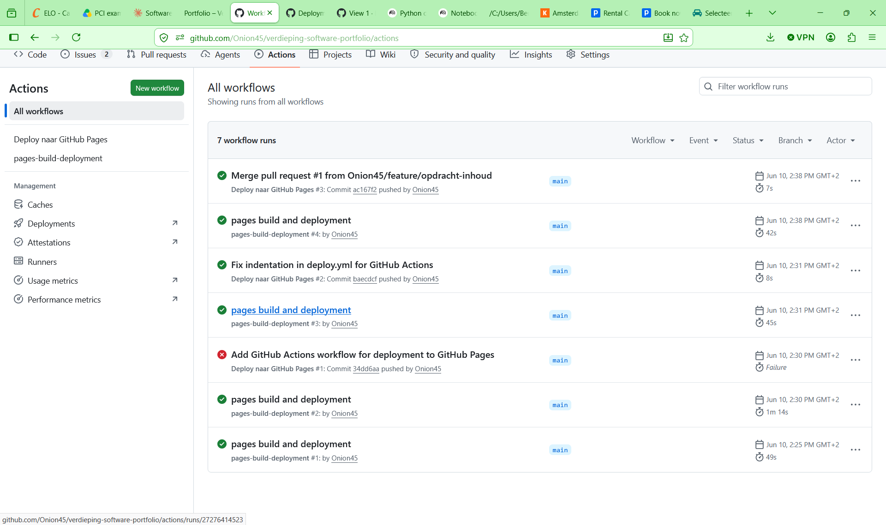
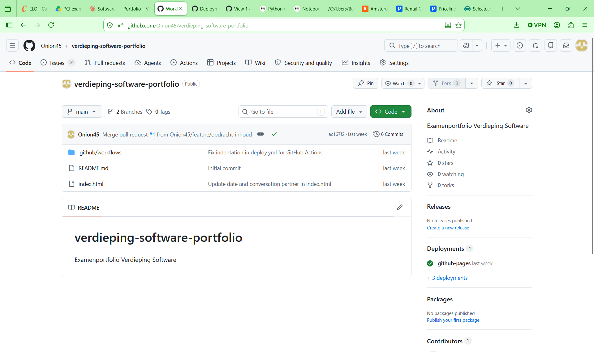
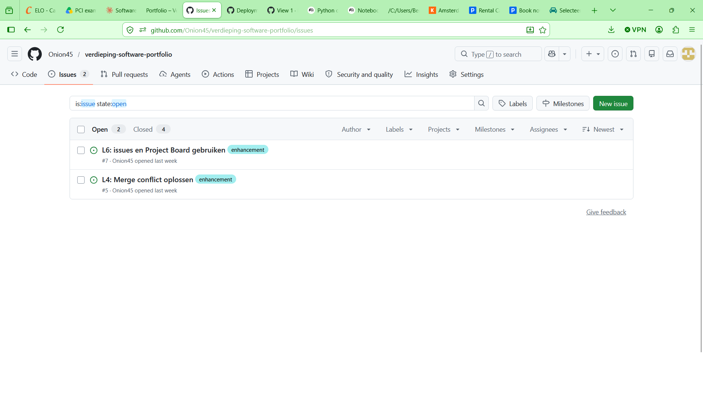
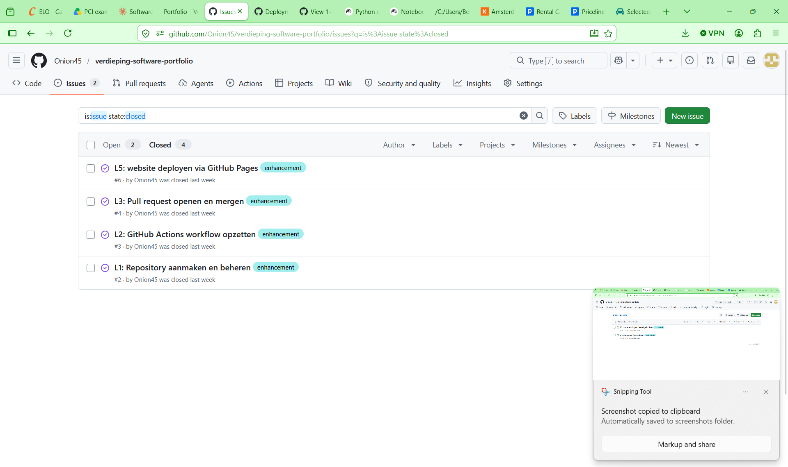

Examenportfolio voor keuzedeel Verdieping Software. Gekozen pakket: GitHub. Opleiding: MBO Software Development, Capabel Onderwijs.
Beroepsprofiel, selectiecriteria, vergelijking pakketten en beargumenteerde keuze.
Een software developer ontwerpt, bouwt en onderhoudt softwareapplicaties. Dat gaat van het schrijven van backend-code in C# of Java tot het bouwen van webinterfaces en het opzetten van automatische testpipelines. In een team werk je aan sprints, review je elkaars code, en lever je werkende software op aan klanten of eindgebruikers.
Tijdens mijn stage bij PCI Nederland werk ik aan een IT self-service portal. Ik gebruik dagelijks tools als VS Code, Jira en GitHub om taken te beheren, code te schrijven en samen te werken met mijn stagebegeleider.
Relevante ontwikkelingen in het vakgebied zijn onder andere AI-assistentie in de editor (GitHub Copilot), cloud-native development, en DevOps-werkwijzen waarbij developers ook verantwoordelijk zijn voor deployment en monitoring.
| # | Criterium | Toelichting | Belang |
|---|---|---|---|
| 01 | Integratie met andere tools | Moet samenwerken met VS Code, Jira en Slack | Hoog |
| 02 | Automatiseringsmogelijkheden | CI/CD-pipelines voor automatisch testen en deployen | Hoog |
| 03 | Kosten | Gratis of betaalbaar voor een starter/stagiair | Hoog |
| 04 | Samenwerking in teams | Meerdere mensen kunnen parallel werken zonder conflicten | Hoog |
| 05 | Betrouwbaarheid | Hoge uptime, veilig opgeslagen, 2FA-support | Gemiddeld |
| 06 | Documentatie & leerbronnen | Officiële docs, tutorials, community-support beschikbaar | Gemiddeld |
| 07 | Gebruiksgemak | Leercurve niet te steil voor een beginner | Gemiddeld |
| Criterium | Microsoft Teams | Jira Software | GitHub |
|---|---|---|---|
| Hoofddoel | Communicatie & samenwerken | Project- & taakbeheer | Codebeheer & versiebeheer |
| Integratie | Deels Microsoft 365 | Deels GitHub, Slack | Volledig VS Code, Jira, Slack |
| Automatisering | Power Automate | Automation rules | GitHub Actions (CI/CD) |
| Kosten | Betaald (€6–22/mnd) | Betaald (€7,75+/mnd) | Gratis basisfuncties |
| Versiebeheer | Alleen bestanden (OneDrive) | Geen | Volledig via Git |
| Geschikt voor developer | Aanvullend | Aanvullend | Primair |
Ik heb gekozen voor GitHub als softwarepakket om me verder in te verdiepen. GitHub is de industriestandaard voor versiebeheer en samenwerking aan softwareprojecten. Het scoort op zes van de zeven selectiecriteria een 9 of hoger.
De keuze is gebaseerd op drie concrete argumenten. Ten eerste integreert GitHub direct met alle tools die ik dagelijks gebruik op stage: VS Code, Jira en Slack. Ten tweede biedt GitHub Actions de mogelijkheid om automatische test- en buildpipelines in te stellen — iets dat ik al heb toegepast bij mijn C#-project SparenVoorIedereen. Ten derde is GitHub volledig gratis voor de functies die ik nodig heb, waardoor de drempel om te beginnen laag is.
Jira en Teams zijn waardevol, maar ze vullen GitHub aan — ze vervangen het niet. Als developer is GitHub-kennis geen keuze maar een basisvereiste op de arbeidsmarkt.
Gesprek met opdrachtgever/begeleider over de gekozen software.
Datum: 17 juni 2026 · Gesprekspartner: Stagebegeleider PCI Nederland
INLEIDING
Ik heb mijn stagebegeleider bij PCI uitgelegd waar mijn keuzedeel over gaat. Het keuzedeel heet Verdieping Software. Het doel is: één softwarepakket kiezen, je erin verdiepen, en bewijzen dat je het echt kunt gebruiken. Ik heb gekozen voor GitHub.
MIJN ARGUMENTEN
Ik heb twee argumenten gebruikt om mijn keuze te onderbouwen.
Argument 1 — Versiebeheer is een basisvereiste. GitHub is versiebeheer. Dat betekent: je slaat niet één versie op van je code, maar alle versies. Elke aanpassing wordt bijgehouden. Als iets fout gaat, ga je gewoon terug naar een werkende versie. Elke developer gebruikt dit dagelijks — het is net zo basics als opslaan, maar dan veel slimmer.
Argument 2 — Samenwerken zonder chaos. Als developer werk je bijna nooit alleen. Je werkt in een team. GitHub maakt dat mogelijk zonder dat iemand elkaars werk overschrijft. Iedereen werkt op een eigen branch — een aparte kopie van de code — en daarna voeg je alles samen. Zonder dat soort tools loopt een project snel vast.
REACTIE BEGELEIDER
Mijn begeleider reageerde positief. Volgens hem past GitHub perfect bij het onderwerp van de huidige tijd. Versiebeheer is iets waar elke software developer mee moet kunnen werken. Hij gaf aan dat het slim is om je hier nu al verder in te verdiepen, omdat je dit direct kunt toepassen in je stageopdrachten bij PCI.
CONCLUSIE
✅ Keuze goedgekeurd
Mijn stagebegeleider heeft mijn keuze voor GitHub goedgekeurd. Het onderwerp sluit aan bij mijn stagepraktijk en bij de eisen van de moderne software developer.
Tijdens het gesprek heb ik de volgende argumenten gebruikt om mijn keuze voor GitHub te onderbouwen:
Reflectie, leerdoelen, planning en logboek.
Ik had al basiservaring met Git via mijn C#-project SparenVoorIedereen. Ik kende het concept van repositories en commits, maar had nog weinig ervaring met branches, pull requests en GitHub Actions. Vergelijkbare software die ik eerder heb gebruikt is OneDrive voor bestandsopslag — dat heeft ook een versiegeschiednis, maar is veel minder gedetailleerd dan Git.
Nieuw voor mij waren: het werken met branches in een teamcontext, het oplossen van merge conflicts, het opzetten van een complete CI/CD-pipeline via GitHub Actions, en het gebruik van Issues en Project Boards als alternatief voor Jira.
Mijn voorkeursleerstrategie is leren door te doen, gecombineerd met structureren. Ik maak snel overzichten en ga daarna direct experimenteren. Theorie zonder praktijk beklijft bij mij slecht.
| # | Leerdoel | Hoe te bereiken | Status |
|---|---|---|---|
| L1 | Ik kan zelfstandig een repository aanmaken en beheren met commits en branches | SparenVoorIedereen repo uitbreiden | ● Behaald |
| L2 | Ik kan een GitHub Actions workflow opzetten die automatisch een C#-project compileert | MSBuild workflow gebouwd en getest | ● Behaald |
| L3 | Ik kan een pull request openen, reviewen en samenvoegen | Testproject met klasgenoot of begeleider | ● Behaald |
| L4 | Ik kan een merge conflict herkennen en oplossen in VS Code | Bewust een conflict aanmaken in testbranch | ● Behaald |
| L5 | Ik kan een statische website deployen via GitHub Pages | Dit portfolio live zetten op GitHub Pages | ● Klaar |
| L6 | Ik kan Issues en Project Boards gebruiken om mijn eigen taken te beheren | Issues aanmaken voor prototype-taken | ● Klaar |
| Week | Activiteit | Tijd | Status |
|---|---|---|---|
| Week 1–2 | Onderzoek software, selectiecriteria opstellen, pakketten vergelijken | 4u | ● Klaar |
| Week 3 | Keuze onderbouwen, gesprek met begeleider plannen en voeren | 2u | ● Klaar |
| Week 4 | Leertraject opzetten, leerdoelen formuleren, planning maken | 3u | ● Klaar |
| Week 5–6 | GitHub verdiepen: branches, pull requests, merge conflicts oefenen | 6u | ● Klaar |
| Week 7–8 | Prototype bouwen (HTML/CSS portfolio op GitHub Pages) | 8u | ● Klaar |
| Week 9 | Portfolio afronden, bewijsstukken verzamelen, inleveren | 3u | ● Klaar |
Beroepsprofiel software developer onderzocht. Drie pakketten vergeleken: Teams, Jira en GitHub. Selectiecriteria opgesteld op basis van stagepraktijk bij PCI.
Keuze voor GitHub uitgewerkt met scoretabel en beslisboom. Leerstrategieëntest gedaan — uitkomst: leren door doen + structureren. Functielijst GitHub opgesteld met moeilijkheidsscores.
Gesprek gehad met mijn stagebegeleider bij PCI over mijn softwarekeuze. GitHub uitgelegd en onderbouwd met twee argumenten. Keuze is goedgekeurd — past volgens begeleider perfect bij de huidige tijd.
GitHub verder verkend in de context van mijn stageopdracht. Branches, pull requests en GitHub Actions toegepast in het portfolio-project. Merge conflict geoefend en opgelost in VS Code.
Het prototype is de HTML/CSS portfoliowebsite die je nu bekijkt. Alle secties opgebouwd: beroepsprofiel, selectiecriteria, vergelijking, keuze, leertraject en prototype. Inhoud ingevuld op basis van het onderzoek uit de vorige weken.
Screenshots van GitHub toegevoegd als bewijsstukken. Issues en Project Board aangemaakt en afgerond. Portfolio live gezet via GitHub Pages. Alle opdrachten volledig ingevuld.
BEWIJSSTUKKEN / SCREENSHOTS



Voorstel, opgeleverd prototype en logboek. Cruciaal criterium — dit moet minimaal een 1 scoren.
Wat ga ik bouwen? Een persoonlijk portfolio als statische HTML/CSS-website, gehost via GitHub Pages. De website toont mijn examenportfolio voor het keuzedeel Verdieping Software en is de pagina die je nu bekijkt.
FUNCTIONALITEIT
TECHNIEKEN
LAY-OUT CONCEPT
Donker thema geïnspireerd op GitHub's eigen interface. Monospace-font voor koppen en labels, sans-serif voor lopende tekst. Elke sectie heeft een terminal-prompt als visueel anker. Kleurcodering: groen = klaar, geel = bezig, grijs = gepland.
Het prototype is de website die je nu bekijkt. De broncode staat in een GitHub repository met meerdere commits, een branch-structuur en een GitHub Actions workflow.
🔗 Repository: github.com/Onion45/verdieping-software-portfolio
🌐 Live site: onion45.github.io/verdieping-software-portfolio
PROTOTYPE SCREENSHOTS

EXTRA BEWIJS — ISSUES & PROJECT BOARD


Repository aangemaakt op GitHub. Voorstel voor portfolio uitgeschreven. Basisstructuur HTML/CSS gebouwd.
GitHub Pages ingeschakeld voor de repository. Settings → Pages → branch main geselecteerd. De portfoliowebsite werd hiermee bereikbaar via een publieke URL.
GitHub Actions workflow aangemaakt die automatisch triggert bij elke push naar main. De website wordt automatisch gedeployed zonder handmatige stappen. Workflow draait succesvol — groen vinkje zichtbaar in het Actions-tabblad.